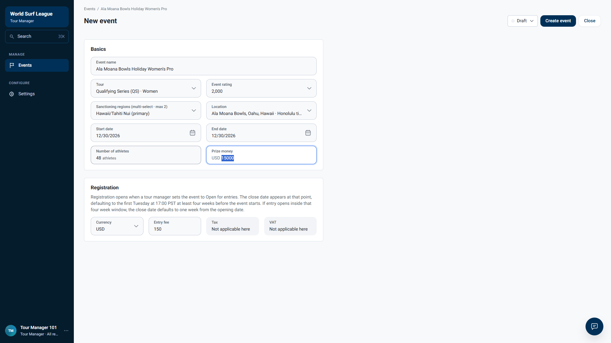
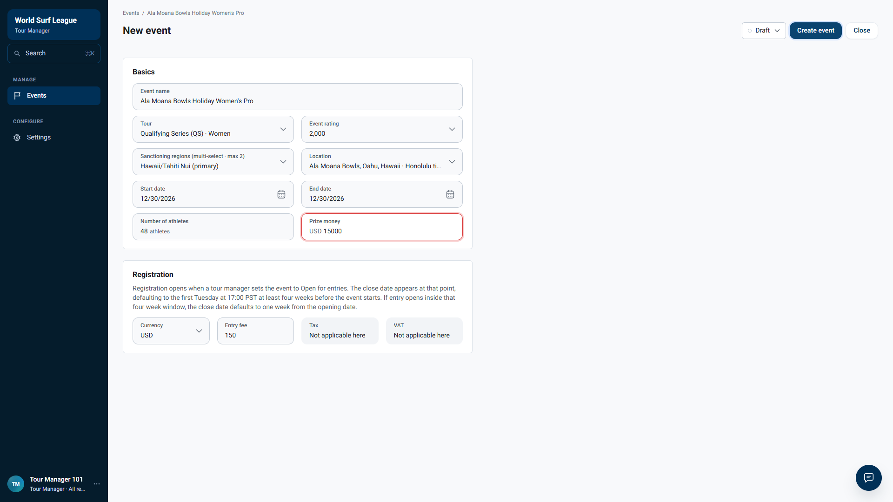
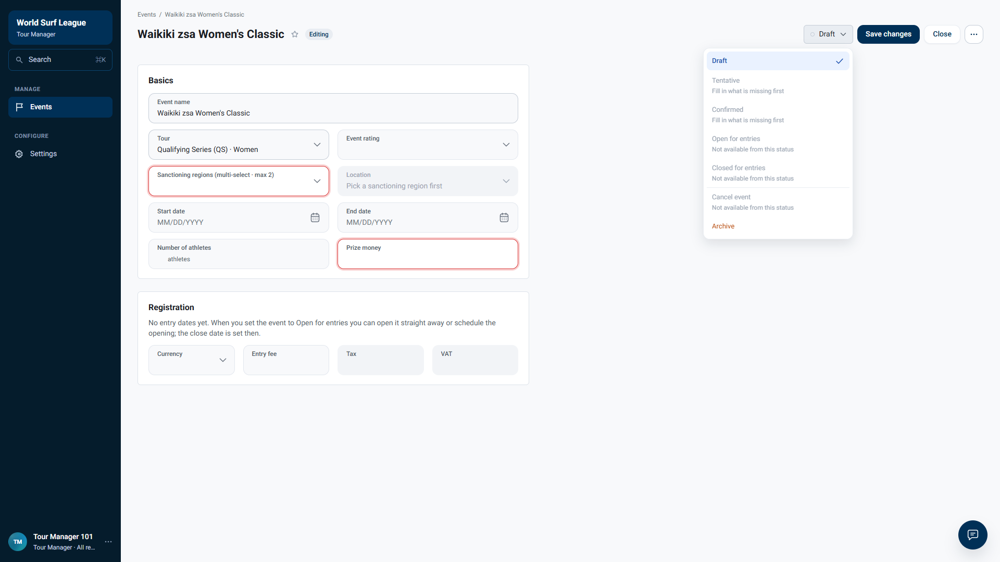
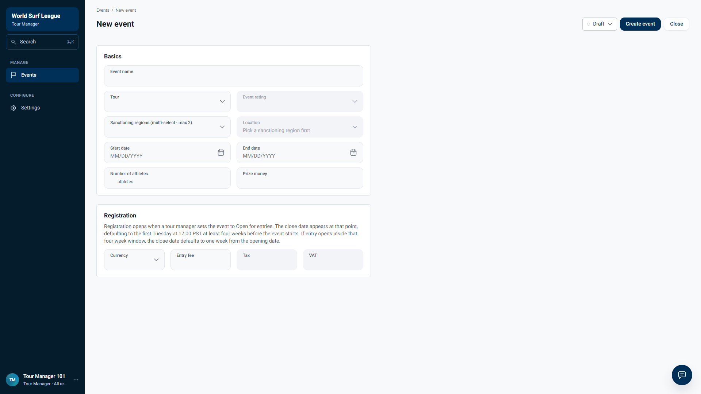

Tour Manager · Event form and Open for entries · Live dev, 21 October 2026 · Stripe not involved
Registration window defaults: rule check, new Open for entries flow, and event create
Summary
Dev was redeployed on 21 Oct 2026: the New event form has no registration fields; the window is set in the Open for entries dialog.
Rule: opens 3 calendar months before the start at 09:00 venue time (clamped to the month's last day); closes on the Tuesday on or before 4 weeks before the start at 17:00 Los Angeles time, shown on the venue clock. Since the redeploy the form says entries open when the Tour Manager sets Open for entries, and a close inside the four-week window becomes one week after the opening.
Minimum fields before an event can be Confirmed and opened: name, tour, event rating, sanctioning region, location, start and end dates.
Why 13 cases are blocked
Blocked by BUG-EVT-500: creating or editing an event with a location and both dates returns HTTP 500 on dev (21 Oct 2026, after the redeploy), and the New event form's Create event does nothing, so no fresh event without a saved window could be confirmed and opened.
Bugs found
| Bug | Severity | Cases |
|---|---|---|
| Event create/edit returns HTTP 500 when location, start and end date are all set | High | OE-18, OE-19 |
| New event form: Create event does nothing for a complete form | High | OE-17 |
| 27 venues are stored with a time zone that shows the wrong local time (Hawaii, France, Portugal, Morocco, South Africa, Ireland) | Medium | OE-16 |
Live check of the rule: 25 of 25 match
GET /tour-manager/reference/registration-window-default compared with an independent calculation, 5 venues × 5 start dates.
| Result | Venue (stored zone) | Start | API opens · closes | How |
|---|---|---|---|---|
| PASS | Ala Moana Bowls, Oahu, Hawaii Pacific/Honolulu | 2026-12-31 month-end clamp (Sep has 30 days) | 2026-09-30 09:00 2026-12-01 15:00 | anchor 2026-12-03 → Tue 2026-12-01 17:00 LA (UTC-8) = Tue 15:00 venue |
| PASS | Ala Moana Bowls, Oahu, Hawaii Pacific/Honolulu | 2026-11-05 close Tuesday in Oct (daylight time in LA) | 2026-08-05 09:00 2026-10-06 14:00 | anchor 2026-10-08 → Tue 2026-10-06 17:00 LA (UTC-7) = Tue 14:00 venue |
| PASS | Ala Moana Bowls, Oahu, Hawaii Pacific/Honolulu | 2026-12-29 start − 28 days is a Tuesday | 2026-09-29 09:00 2026-12-01 15:00 | anchor 2026-12-01 → Tue 2026-12-01 17:00 LA (UTC-8) = Tue 15:00 venue |
| PASS | Ala Moana Bowls, Oahu, Hawaii Pacific/Honolulu | 2026-12-28 start − 28 days is a Monday | 2026-09-28 09:00 2026-11-24 15:00 | anchor 2026-11-30 → Tue 2026-11-24 17:00 LA (UTC-8) = Tue 15:00 venue |
| PASS | Ala Moana Bowls, Oahu, Hawaii Pacific/Honolulu | 2028-05-31 leap-year clamp to 29 Feb | 2028-02-29 09:00 2028-05-02 14:00 | anchor 2028-05-03 → Tue 2028-05-02 17:00 LA (UTC-7) = Tue 14:00 venue |
| PASS | Avoca Beach, NSW, Australia Australia/Sydney | 2026-12-31 month-end clamp (Sep has 30 days) | 2026-09-30 09:00 2026-12-02 12:00 | anchor 2026-12-03 → Tue 2026-12-01 17:00 LA (UTC-8) = Wed 12:00 venue |
| PASS | Avoca Beach, NSW, Australia Australia/Sydney | 2026-11-05 close Tuesday in Oct (daylight time in LA) | 2026-08-05 09:00 2026-10-07 11:00 | anchor 2026-10-08 → Tue 2026-10-06 17:00 LA (UTC-7) = Wed 11:00 venue |
| PASS | Avoca Beach, NSW, Australia Australia/Sydney | 2026-12-29 start − 28 days is a Tuesday | 2026-09-29 09:00 2026-12-02 12:00 | anchor 2026-12-01 → Tue 2026-12-01 17:00 LA (UTC-8) = Wed 12:00 venue |
| PASS | Avoca Beach, NSW, Australia Australia/Sydney | 2026-12-28 start − 28 days is a Monday | 2026-09-28 09:00 2026-11-25 12:00 | anchor 2026-11-30 → Tue 2026-11-24 17:00 LA (UTC-8) = Wed 12:00 venue |
| PASS | Avoca Beach, NSW, Australia Australia/Sydney | 2028-05-31 leap-year clamp to 29 Feb | 2028-02-29 09:00 2028-05-03 10:00 | anchor 2028-05-03 → Tue 2028-05-02 17:00 LA (UTC-7) = Wed 10:00 venue |
| PASS | Avalon Beach, Mandurah, Western Australia Australia/Perth | 2026-12-31 month-end clamp (Sep has 30 days) | 2026-09-30 09:00 2026-12-02 09:00 | anchor 2026-12-03 → Tue 2026-12-01 17:00 LA (UTC-8) = Wed 09:00 venue |
| PASS | Avalon Beach, Mandurah, Western Australia Australia/Perth | 2026-11-05 close Tuesday in Oct (daylight time in LA) | 2026-08-05 09:00 2026-10-07 08:00 | anchor 2026-10-08 → Tue 2026-10-06 17:00 LA (UTC-7) = Wed 08:00 venue |
| PASS | Avalon Beach, Mandurah, Western Australia Australia/Perth | 2026-12-29 start − 28 days is a Tuesday | 2026-09-29 09:00 2026-12-02 09:00 | anchor 2026-12-01 → Tue 2026-12-01 17:00 LA (UTC-8) = Wed 09:00 venue |
| PASS | Avalon Beach, Mandurah, Western Australia Australia/Perth | 2026-12-28 start − 28 days is a Monday | 2026-09-28 09:00 2026-11-25 09:00 | anchor 2026-11-30 → Tue 2026-11-24 17:00 LA (UTC-8) = Wed 09:00 venue |
| PASS | Avalon Beach, Mandurah, Western Australia Australia/Perth | 2028-05-31 leap-year clamp to 29 Feb | 2028-02-29 09:00 2028-05-03 08:00 | anchor 2028-05-03 → Tue 2028-05-02 17:00 LA (UTC-7) = Wed 08:00 venue |
| PASS | Hossegor, Hossegor, France America/Los_Angeles | 2026-12-31 month-end clamp (Sep has 30 days) | 2026-09-30 09:00 2026-12-01 17:00 | anchor 2026-12-03 → Tue 2026-12-01 17:00 LA (UTC-8) = Tue 17:00 venue |
| PASS | Hossegor, Hossegor, France America/Los_Angeles | 2026-11-05 close Tuesday in Oct (daylight time in LA) | 2026-08-05 09:00 2026-10-06 17:00 | anchor 2026-10-08 → Tue 2026-10-06 17:00 LA (UTC-7) = Tue 17:00 venue |
| PASS | Hossegor, Hossegor, France America/Los_Angeles | 2026-12-29 start − 28 days is a Tuesday | 2026-09-29 09:00 2026-12-01 17:00 | anchor 2026-12-01 → Tue 2026-12-01 17:00 LA (UTC-8) = Tue 17:00 venue |
| PASS | Hossegor, Hossegor, France America/Los_Angeles | 2026-12-28 start − 28 days is a Monday | 2026-09-28 09:00 2026-11-24 17:00 | anchor 2026-11-30 → Tue 2026-11-24 17:00 LA (UTC-8) = Tue 17:00 venue |
| PASS | Hossegor, Hossegor, France America/Los_Angeles | 2028-05-31 leap-year clamp to 29 Feb | 2028-02-29 09:00 2028-05-02 17:00 | anchor 2028-05-03 → Tue 2028-05-02 17:00 LA (UTC-7) = Tue 17:00 venue |
| PASS | Peniche, Leiria, Portugal Europe/Paris | 2026-12-31 month-end clamp (Sep has 30 days) | 2026-09-30 09:00 2026-12-02 02:00 | anchor 2026-12-03 → Tue 2026-12-01 17:00 LA (UTC-8) = Wed 02:00 venue |
| PASS | Peniche, Leiria, Portugal Europe/Paris | 2026-11-05 close Tuesday in Oct (daylight time in LA) | 2026-08-05 09:00 2026-10-07 02:00 | anchor 2026-10-08 → Tue 2026-10-06 17:00 LA (UTC-7) = Wed 02:00 venue |
| PASS | Peniche, Leiria, Portugal Europe/Paris | 2026-12-29 start − 28 days is a Tuesday | 2026-09-29 09:00 2026-12-02 02:00 | anchor 2026-12-01 → Tue 2026-12-01 17:00 LA (UTC-8) = Wed 02:00 venue |
| PASS | Peniche, Leiria, Portugal Europe/Paris | 2026-12-28 start − 28 days is a Monday | 2026-09-28 09:00 2026-11-25 02:00 | anchor 2026-11-30 → Tue 2026-11-24 17:00 LA (UTC-8) = Wed 02:00 venue |
| PASS | Peniche, Leiria, Portugal Europe/Paris | 2028-05-31 leap-year clamp to 29 Feb | 2028-02-29 09:00 2028-05-03 02:00 | anchor 2028-05-03 → Tue 2028-05-02 17:00 LA (UTC-7) = Wed 02:00 venue |
The calculation is right everywhere; Hossegor (stored as America/Los_Angeles) and Peniche (stored as Europe/Paris) get the wrong local times only because of their stored zones (see the time-zone bug).
Test cases
| ID | Check | Area | Result | Expected | Actual |
|---|---|---|---|---|---|
| OE-01 | Minimum fields before Open for entries | Minimum fields | PASS | Confirmed blocked until: Location, Start and end dates, Sanctioning region, Event rating; Open for entries not available | missing: Location, Start and end dates, Sanctioning region, Event rating · open-for-entries available: false |
| OE-02 | Form shows no registration fields and explains the rule | Form | PASS | no opens/closes fields; rule text present | fields: 0; rule text: true |
| OE-03 | Open now, start 31 Dec 2026 (Hawaii): close defaults to the Tuesday 4+ weeks before, 17:00 Pacific on the venue clock | Default close | BLOCKED | - | Blocked by the event create/edit 500 (see above). |
| OE-04 | Schedule opening before the four-week cutoff: close stays on the default Tuesday | Scheduled opening | BLOCKED | - | Blocked by the event create/edit 500 (see above). |
| OE-05 | Schedule opening inside the four-week window: close becomes one week after the opening | Scheduled opening | BLOCKED | - | Blocked by the event create/edit 500 (see above). |
| OE-06 | Schedule opening after the event starts is refused | Validation | BLOCKED | - | Blocked by the event create/edit 500 (see above). |
| OE-07 | Schedule opening in the past is refused | Validation | BLOCKED | - | Blocked by the event create/edit 500 (see above). |
| OE-08 | Entries close after the event starts is refused | Validation | BLOCKED | - | Blocked by the event create/edit 500 (see above). |
| OE-09 | Open now for an event 20 days away: close defaults to one week from today | Inside the window | BLOCKED | - | Blocked by the event create/edit 500 (see above). |
| OE-10 | Open now for an event 4 days away: the default close must not fall after the start | Inside the window | BLOCKED | - | Blocked by the event create/edit 500 (see above). |
| OE-11 | Daylight saving: default close on Tue 27 Oct is 17:00 PDT = 14:00 Hawaii (the form text says PST) | Time zones | BLOCKED | - | Blocked by the event create/edit 500 (see above). |
| OE-12 | Sydney venue: times are on the venue clock (close is Wednesday noon) with "in your time" shown | Time zones | BLOCKED | - | Blocked by the event create/edit 500 (see above). |
| OE-13 | Hawaii venue stored with a non-Hawaii time zone: the dialog shows the wrong venue clock | Time zones | BLOCKED | - | Blocked by the event create/edit 500 (see above). |
| OE-14 | A typed close date is kept when switching between Open now and Schedule opening | Manual values | BLOCKED | - | Blocked by the event create/edit 500 (see above). |
| OE-15 | Open now saves the shown window and the event becomes Open for entries | Save | BLOCKED | - | Blocked by the event create/edit 500 (see above). |
| OE-16 | Venue time zones match their country (the window is shown on the venue clock) | Data | FAIL | each venue shows its own local clock | 27 venues show a wrong clock, e.g. Himalayas, Oahu, Hawaii → America/Los_Angeles (should be Pacific/Honolulu; off by +2 h / +3 h); Jaws, Maui, Hawaii → America/Los_Angeles (should be Pacific/Honolulu; off by +2 h / +3 h); Outer Reef Kahului, Maui, Hawaii → America/Los_Angeles (should be Pacific/Honolulu; off by +2 h / +3 h); Outer Reef Oahu, Oahu, Hawaii → America/Los_Angeles (should be Pacific/Honolulu; off by +2 h / +3 h); Pyrenees, Pyrenees, France → WET (should be Europe/Paris; off by -1 h); Avalanche, Guethary, France → America/Los_Angeles (should be Europe/Paris; off by -9 h). (22 more use a different but equivalent zone name.) |
| OE-17 | New event form: Create event with every field filled sends the event | Event create | FAIL | POST /tour-manager/events, then the event page (or a field message) | Name, tour QS Women, rating 2,000, Hawaii/Tahiti Nui, Ala Moana Bowls, 12/30/2026–12/30/2026, 48 athletes, prize USD 15000, fee USD 150 (from Settings): the button is enabled, but a click, a scripted click and Enter send no request, show no message and log no error. Prize money stays outlined red. |
| OE-18 | API create with location + start + end date succeeds | Event create | FAIL | HTTP 201 (or 422 naming a field) | HTTP 500 "Something went wrong on our side" whenever location, start date and end date are all present; each field alone, and any two of them, return 201. Same with format, field size, prize money or start ≠ end. |
| OE-19 | API edit: adding the end date to a draft that has a location and start date | Event create | FAIL | HTTP 200 | PUT /tour-manager/events/{id} → HTTP 500. |
Venues showing the wrong local time (27)
| Venue → stored zone (correct zone; difference) |
|---|
| Himalayas, Oahu, Hawaii → America/Los_Angeles (should be Pacific/Honolulu; off by +2 h / +3 h) |
| Jaws, Maui, Hawaii → America/Los_Angeles (should be Pacific/Honolulu; off by +2 h / +3 h) |
| Outer Reef Kahului, Maui, Hawaii → America/Los_Angeles (should be Pacific/Honolulu; off by +2 h / +3 h) |
| Outer Reef Oahu, Oahu, Hawaii → America/Los_Angeles (should be Pacific/Honolulu; off by +2 h / +3 h) |
| Pyrenees, Pyrenees, France → WET (should be Europe/Paris; off by -1 h) |
| Avalanche, Guethary, France → America/Los_Angeles (should be Europe/Paris; off by -9 h) |
| Biscarrosse, Landes, France → America/Los_Angeles (should be Europe/Paris; off by -9 h) |
| Vendãe, Pays de la Loire, France → WET (should be Europe/Paris; off by -1 h) |
| Caparica, Lisbon District, Portugal → America/Los_Angeles (should be Europe/Lisbon; off by -8 h) |
| Gironde, Nouvelle-Aquitaine, France → America/Los_Angeles (should be Europe/Paris; off by -9 h) |
| Penmarch, Bretagne, France → America/Los_Angeles (should be Europe/Paris; off by -9 h) |
| Hossegor, Hossegor, France → America/Los_Angeles (should be Europe/Paris; off by -9 h) |
| Peniche, Leiria, Portugal → Europe/Paris (should be Europe/Lisbon; off by +1 h) |
| Pantin, A Coruna, Spain → America/Los_Angeles (should be Europe/Madrid; off by -9 h) |
| Gironde, Gironde, France → WET (should be Europe/Paris; off by -1 h) |
| Matosinhos, Porto, Portugal → America/Los_Angeles (should be Europe/Lisbon; off by -8 h) |
| Prowlers, Ireland → America/Los_Angeles (should be Europe/Dublin; off by -8 h) |
| Rokaputa, Spain → America/Los_Angeles (should be Europe/Madrid; off by -9 h) |
| San Borondon, Spain → Atlantic/Azores (should be Europe/Madrid; off by -2 h) |
| Landes, Landes, France → WET (should be Europe/Paris; off by -1 h) |
| Ain Diab, Casablanca, Morocco → WET (should be Africa/Casablanca; off by -1 h) |
| Anchor Point, Taghazout Bay, Morocco → Europe/Paris (should be Africa/Casablanca; off by +1 h) |
| agadir, Agadir, Morocco → America/Los_Angeles (should be Africa/Casablanca; off by -9 h / -8 h) |
| Namakwaland, Northern Cape, South Africa → America/Los_Angeles (should be Africa/Johannesburg; off by -10 h / -9 h) |
| Herolds Bay, Western Cape, South Africa → America/Los_Angeles (should be Africa/Johannesburg; off by -10 h / -9 h) |
| Seal Reef, South Africa → America/Los_Angeles (should be Africa/Johannesburg; off by -10 h / -9 h) |
| Umhlunga Rocks, Durban, South Africa → America/Los_Angeles (should be Africa/Johannesburg; off by -10 h / -9 h) |
22 more venues use a different but equivalent zone name (same clock) and are not counted.
Recordings
Create event does nothing (complete form)
Test run (minimum fields, form, blocked dialog cases)
Screenshots
New event form, every field filled


After Create event: nothing sent, no message


OE-01 · status menu lists what is missing


OE-02 · form has no registration fields; rule explained

